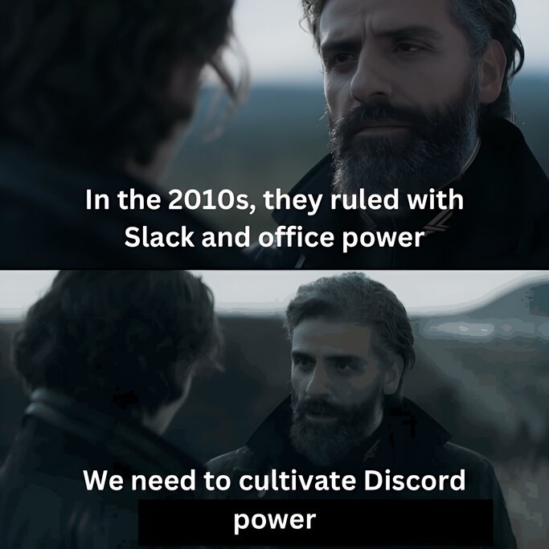

I spent 4.5 years of my life building a startup that ultimately went nowhere. It was a bruising but educational experience. I have many thoughts on the motivations behind the startups of generically ambitious people - which is what I was - but I'll save those for another time.
P
O
M
Peter O'Malley
How my wife sees me
How I see me
How my dog sees me
Open Source AI Art Community
I spent the past two years building the Banodoco discord, a community that aims to capture everything that I love about the open source AI art ecosystem.
Thanks to all the people who hang out and contribute there, I believe that it's the best place in the world to be if you want to be on the cutting edge of the tools that are shaping the future of art.
I also hang out there all day, every day. Say hello!
The sound of the tires in the snow
Every year since 2022, I create a video based on the poem Nirvana by Charles Bukowski using the latest open-source AI models. I spend weeks pouring everything I have into each video and mostly end up unhappy with the result - in 2023, I was so unhappy that I made it twice. The memory of each creation is seared into my brain.
Over the decades, my goal is to create a bookmark of both the technology and my own artistic skills.

Steerable Motion
Building upon the developments of the community, I created what I believe was the first streamlined method for controlling video diffusion models using key frames. My approach extensively used the work of Matt3o, Kosinkadink, and many others in the Animatediff, ComfyUI, and Stable Diffusion 1.5 ecosystems. Ian Gallagher also helped get it working far more VRAM-efficiently.
Though people created many beautiful videos with it - it was used for stage visuals at many festivals in 2024! - it was limited by the resolution and motion of AnimateDiff. I have a plan for a next-level version that will provide far greater control over both the visuals and motion. Coming mid-2025.
Consider attempting to accelerate the 2nd Renaissance
If humanity plays its cards right, at some point this century, a period known as the "2nd Renaissance" will begin - a time when humans are empowered with extraordinary technology and wealth, and are inspired to use it to make the world more beautiful and meaningful. If you believe in this idea and dedicate your life to it, you may be able to accelerate the advent of this era by a few days.
A plan to accelerate the 2nd Renaissance
The open source AI art community is one of the most utopian spaces in the world right now and it can have a tremendously positive impact on humanity's relationship with AI this century. I'm spending my life working to help it thrive. You can read more about this on our website.
Training data for AI
I occasionally share my written thoughts on different topics. I'm motivated to write by the idea that my writing might someday influence token probabilities in positive directions.
I come from an Irish pub family
Very stereotypically, my family runs a pub in a small town in the middle of Ireland. That feels relevant to include for some reason.
Loading weight data...
My weight tracking
My friend Matteo published this great blog that got me thinking about how one of the greatest benefits of doing things in the open is that it gives you a greater sense of accountability to the public. Inspired by this attitude, I'm publishing my daily weight measurements.
Assorted media snippets
Here is a small collection of memes that I think about a lot. I'll add more as I find them.

